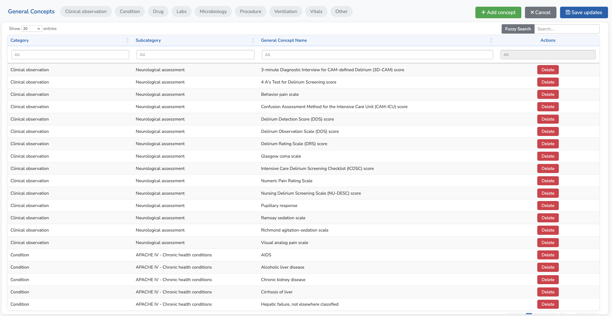

General Concepts
The General Concepts page is the main entry point for browsing the INDICATE Data Dictionary. It displays all general concepts organized by category and subcategory.

Why General Concepts?
The INDICATE Data Dictionary is organized around general concepts rather than individual terminology codes. This design choice reflects how clinical researchers actually work: when designing a study protocol, they refer to "Heart Rate" or "Serum Creatinine" rather than specific LOINC codes with their method and specimen variations.
This level of abstraction provides several benefits:
- Facilitates research project design — Clinicians and researchers can quickly identify which variables are available in the dictionary without navigating complex terminology hierarchies
- Improves communication — Provides a common language between data scientists and clinicians, bridging the gap between technical terminology codes and clinical concepts
- Simplifies ETL decisions — Each general concept groups related terminology codes, making it easier to decide how to map source data
Categories and Subcategories
General concepts are organized into categories (e.g., Vitals, Labs, Drugs) and subcategories (e.g., Haemodynamics, Ventilatory) to help users navigate the dictionary efficiently.
Searching the Dictionary
The application provides multiple ways to find concepts in the dictionary:
Category Badges
At the top of the page, category badges allow you to quickly filter the table by category. Click on a badge to show only concepts from that category. Click again to remove the filter.

Column Filters
Each column in the DataTable has a filter input at the top. These filters perform exact matching — only rows that contain the exact text you type will be shown. Column filters can be combined for precise searches.
Fuzzy Search
The Fuzzy Search input (top right) searches the general concept name column using approximate matching. This is useful when you're not sure of the exact spelling or want to find similar concepts.
For example, searching "kreatinin" (with a typo) will still find "Creatinine" and related concepts, making it easier to find what you're looking for even with spelling mistakes.
Edit Mode
The dictionary can be edited by users with appropriate permissions. To enter edit mode, click the Edit page button in the top right corner of the page.
In edit mode, you can:
Delete General Concepts
Click the Delete button in the Actions column to remove a general concept from the dictionary. A confirmation dialog will appear before deletion.
Edit Names Inline
Double-click on any cell in the Category, Subcategory, or General Concept Name columns to edit the value directly in the table.

Add New General Concepts
Click the Add concept button to create a new general concept. A form will appear where you need to provide:
- General Concept Name — The name of the new concept
- Category — Select from existing categories or create a new one
- Subcategory — Select from existing subcategories or create a new one
To create a new category or subcategory, click the + button next to the dropdown menu. Enter the new name and it will be added to the list of available options.
Viewing Concept Details
To view the details of a general concept, including its associated OMOP concepts and expert comments:
- Double-click on a row in the table, or
- Select a row and click the View details button
This will take you to the Concept Details page.